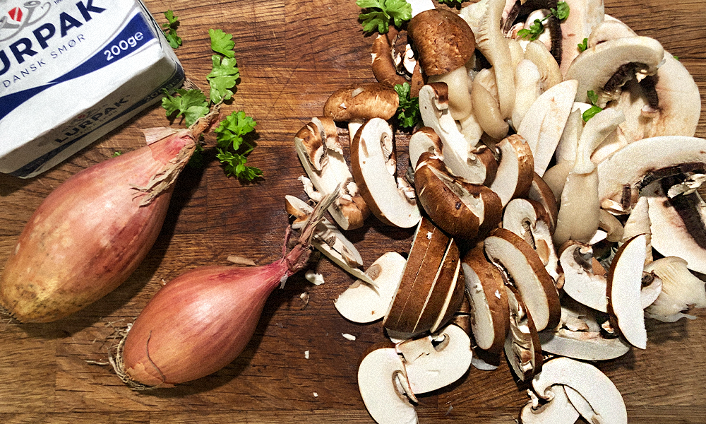
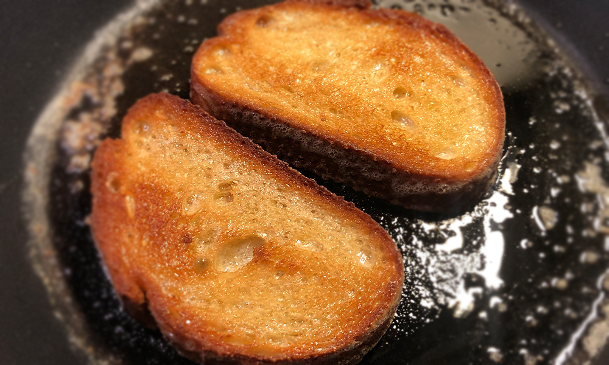
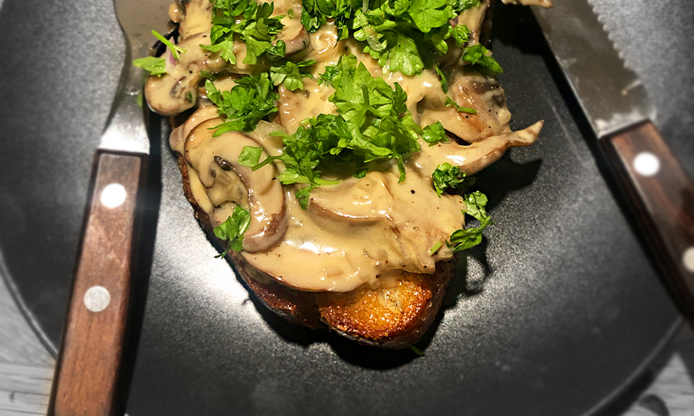

Efteråret nærmer sig
Vi har ramt efteråret, og det bringer mange gode ting med sig. Vejret udenfor bliver en smule koldere, bladene falder så småt fra træerne, og stranden bliver langsomt skiftet ud med et varmt tæppe, en sofa og Netflix - det hele bliver lidt mere hyggeligt. En anden gode, som mange overser ved denne årstid, er den danske svampesæson, der også peaker i efteråret. Som studerende på SU, er dette en kæmpe fordel! For hvem siger nej til gratis råvarer, der med meget lidt arbejde, kan forvandles til et ekstremt lækkert måltid? Tag en pause fra studierne og kom udenfor i naturen! Pak din bedste svampekurv og tag på jagt i din lokale skov!
Gode tips til svampejagten
Svampejagten kan intimidere mange, og det er en svær verden at navigere i - hvis man vel og mærke gerne vil have noget spiseligt og ikke-giftigt med hjem i kurven. I dag findes der dog mange guidede svampeture, man kan tage afsted på til få penge. Ellers kan man helt gratis alliere sig med en ‘svampe-app’, der kan guide dig. For at nævne et par stykker:
‘Danmarks Svampeatlas’ (Gratis)
Shroomi (Koster dog 17kr, men er virkelig det værd)
De bedste svampe for nybegynderen
Nogle svampefamilier er nemmere at at kende end andre, og egner sig derfor godt til nybegyndere. Mange af dem er dog også de mest populære spisesvampe, så det kan ikke altid lykkes at finde dem på sin jagt. Nogle gange tager man tomhændet hjem og bliver nødt til at ofre lidt af SU’en til sin lokale svampe-pusher - men sådan er det.
Rørhatte
En af de bedre svampe-familier at begive sig ud i som nybegynder. Rørhattefamilien har mange spiselige svampe, som er nemme ikke at forveksle med giftige og farlige svampe. I denne kategori finder du blandt andet:
- Karl Johan
- Brunstokket Rørhat
- Brunstokket Rørhat
- Netstokket Indigo-Rørhat
Kantareller
En af de mest eftertragtede svampe i skovbunden, og nok også den flertallet mener, at der smager bedst. Den almindelige kantarel har en pæn gul farve og en krydret eller abrikos-lignende duft. De vokser mange steder, men de vokser bedst i åben bøgeskov, hvor der er løv på bunden.
Opskrift: Svampetoast med revet parmesan og hakket persille
Et god bud på en fantastisk smagende og lækker ret, der kun tager 15-20 minutter at lave. Billig og nærmest skræddersyet til et SU-venligt budget, især hvis du selv finder dine svampe og bruger et daggammelt brød, du alligevel har liggende. Bør nævnes, at det er en ret, der nok mest minder om en forret, men på grund af svampenes smag og kraft, så egner den sig også som hovedret (2 toasts pr. person).
´
Tid: 15-20 minutter
Antal personer: 4 personer til forret, 2 personer til hovedret
Ingredienser
Svampestuvning
- 300-400g svampe (Helst kantareller. Kan erstattes eller blandes med andre arter, såsom champignon, østershatte, karljohan etc.)
- 2 skalotteløg, finthakket
- 2 dl fløde - Lad os bare være ærlige, vælg nu bare 38% - det smager bedre.
- 30g smør - Igen, lad os være ærlige. Hold dig fra blandingsprodukter, brug rigtig smør - det smager bare bedre.
- Salt og peber
Til servering
- 4 skiver lækkert surdejsbrød - behøver ikke være friskt, skal ristes i smør
- 30g smør
- 1 håndfuld hakket persille
- 30g parmesan, revet

Sådan gør du
Svampestuvning
- Start med at rense eller børste dine svampe rene. Har du ingen børste, worst case, skyl dem i stedet, det kan de dog godt tage lidt skade af, når de optager vandet.
- Store svampe kan skæres i mindre stykker. Hold det gerne lidt rustikt. Pil og hak dine skalotteløg fint.
- Opvarm en pande med par spiseskefulde olie til medium varme (helst en god kvalitets olivenolie)
- Tilsæt først dine svampe i panden. Steg indtil svampene har fået en god stegeskorpe og næsten er gyldenbrune. Tilsæt dit smør, og tilsæt derefter dine skalotteløg og fortsæt indtil de er gennemsigtige og har afgivet smag.
- Når svampene er gyldenbrune, så tilsæt fløden, salt og peber og lad det koge ind i et par minutter, mens du rører lidt rundt.
- Nu kan parmesanen rives i og få lov at smelte - eller du kan vente til anretningen, det er op til dig.
Servering
- Start en ny pande op på middel varme med dit smør. Steg brødet indtil det er gyldenbrunt på begge sider. Imens brødet hygger sig, kan du hakke persille til pynt og smag.
- Når brødet er gyldenbrunt anrettes retten. Først det gyldenbrune brød, så din svampestuvning og top med lidt hakket persille og revet parmesan. Velbekomme.

